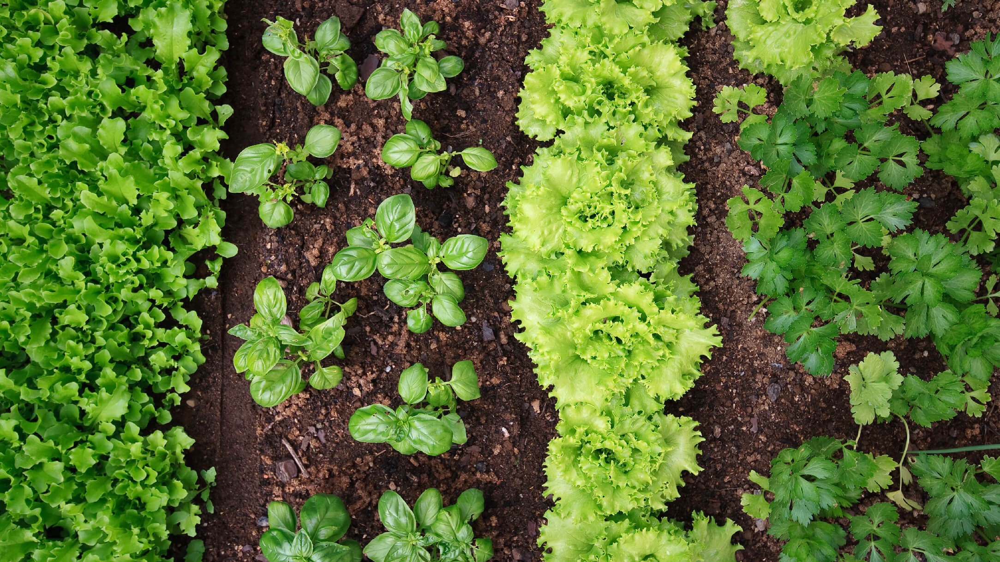
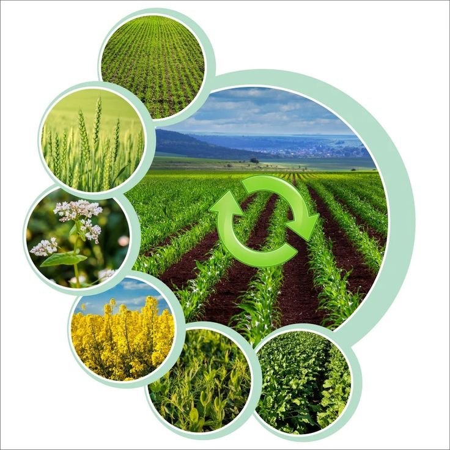
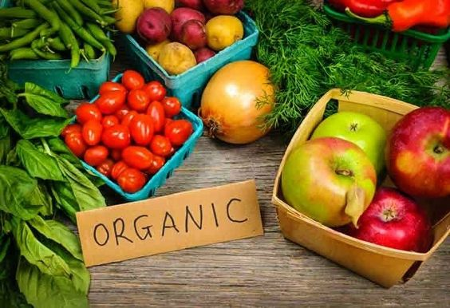
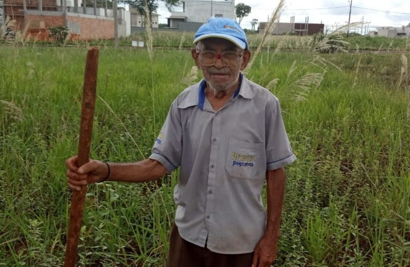
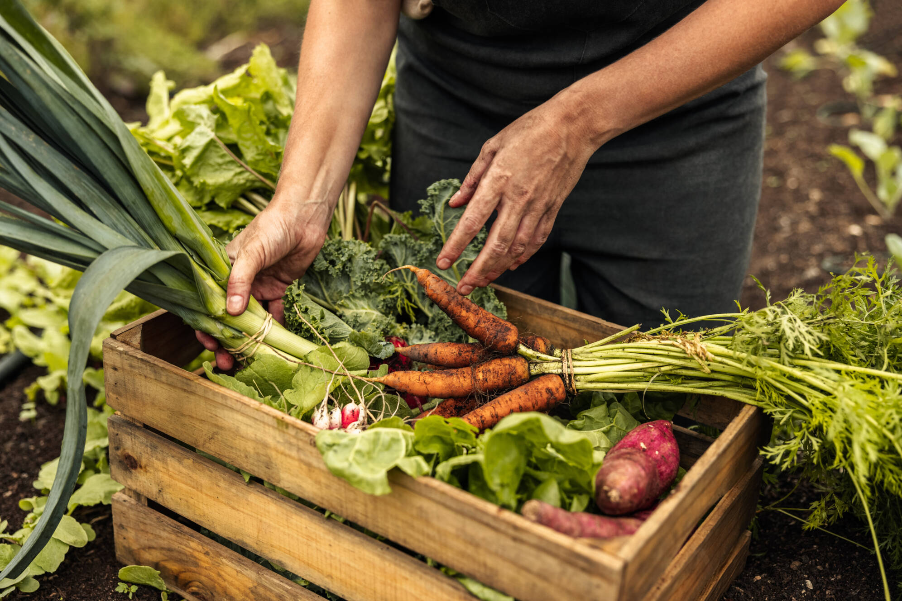

Diferenças entre Agricultura Orgânica e Convencional
Na agricultura convencional, utilizam-se pesticidas e fertilizantes sintéticos, enquanto a orgânica evita esses químicos, focando em métodos naturais como compostagem e rotação de culturas.
Características da Agricultura Orgânica
A agricultura orgânica busca ser sustentável, evitando produtos químicos sintéticos e promovendo a biodiversidade e a saúde do solo com práticas como compostagem e controle biológico.
Vantagens de Produtos Orgânicos
Produtos orgânicos têm menos resíduos químicos, podem ter mais nutrientes e apoiar práticas que preservam o meio ambiente.
Técnicas Utilizadas
- Compostagem
- Rotação de Culturas
- Adubos Verdes
- Controle Biológico
Produção Orgânica no Oeste do Paraná
O Oeste do Paraná é conhecido por sua produção orgânica diversificada, incluindo hortaliças, frutas, grãos e produtos de origem animal, promovendo alimentos saudáveis e sustentáveis.